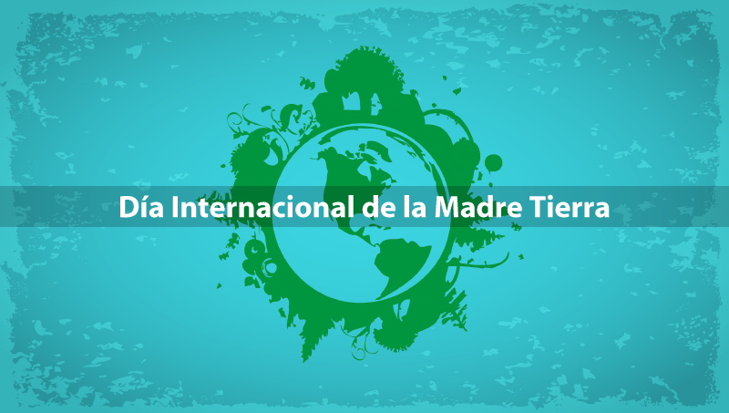
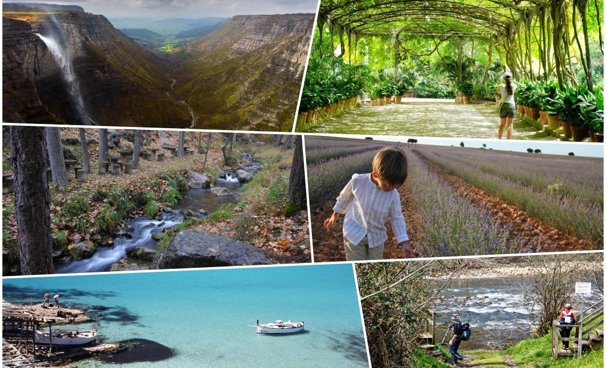
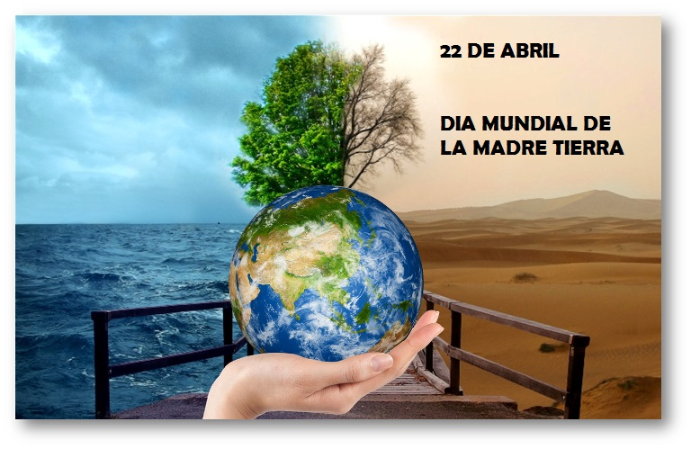
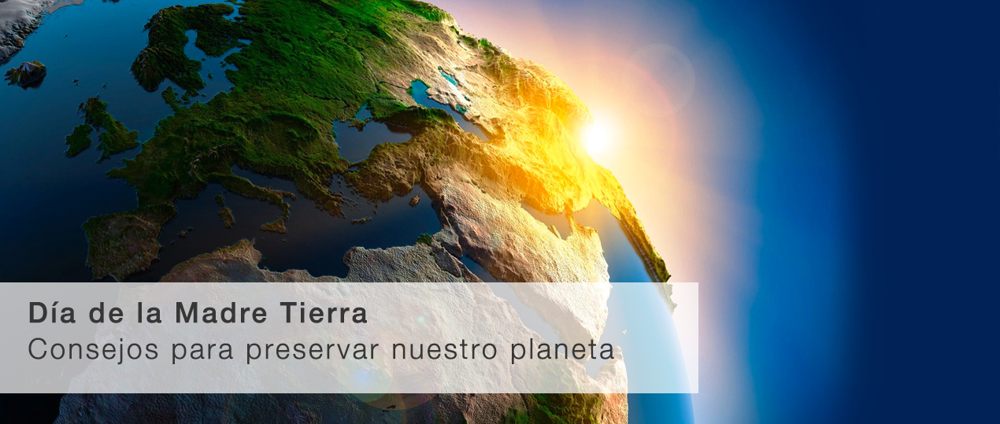
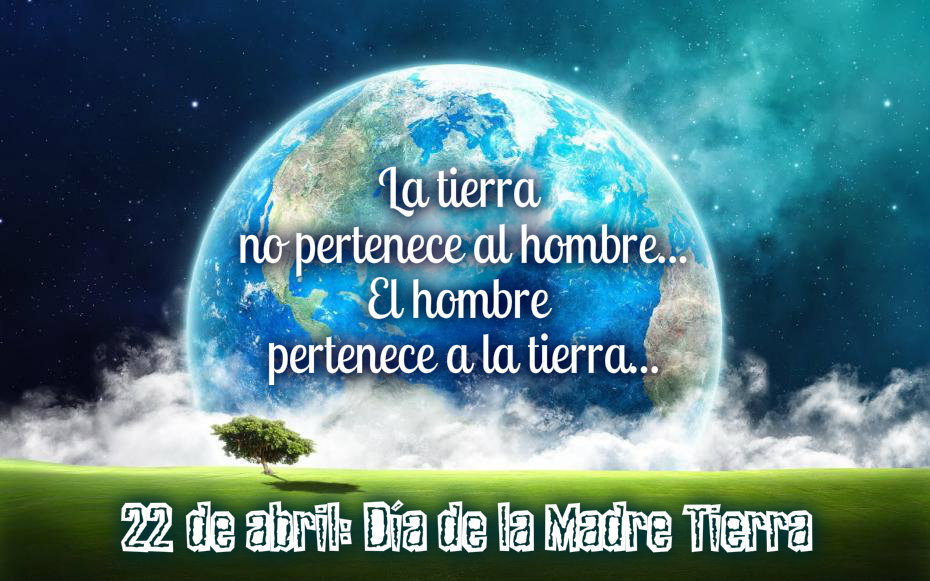
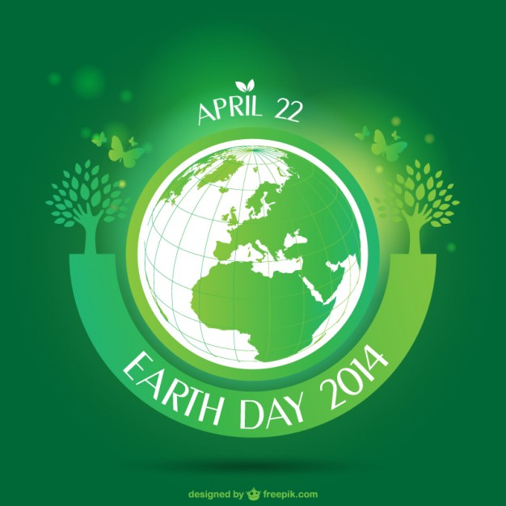

Dia Internaciona de la Madre Tierra


- 
- 
- 
- 
- 
Realizado Por:
Antozac Flores Predes
4 "G"
Epecialid
Programacion
Submodulo
Desarrrolla Aplicaciones Moviles
Docente
Lic.José Antonio Gómez Hernández
4 "G"
Programacion
Desarrrolla Aplicaciones Moviles
Lic.José Antonio Gómez Hernández
Celebramos el Día Internacional de la Madre Tierra para recordar que el planeta y sus ecosistemas nos dan la vida y el sustento. Con este día, asumimos, además, la responsabilidad colectiva, como nos recordaba la Declaración de Río de 1992, de fomentar esta armonía con la naturaleza y la Madre Tierra.
El origen de este día, celebrado mundialmente (aunque no en todas partes), se encuentra en Estados Unidos, durante los 70. Y está asociado, sin duda, a un nombre: Gaylord Nelson.
La Tierra y sus ecosistemas son nuestro hogar. Para alcanzar un justo equilibrio entre las necesidades económicas, sociales y ambientales de las generaciones presentes y futuras, es necesario promover la armonía con la naturaleza y el planeta.
El 23 de abril de 2018 se realizó en la sede de las Naciones Unidas en Nueva York, el 8° Diálogo Interactivo sobre Armonía con la Naturaleza, en ocasión de la conmemoración del Día Internacional de la Madre Tierra.
La gestión integrada de paisajes requiere comprender los diferentes impactos del uso de la tierra y equilibrar los intereses a menudo contradictorios de los diferentes grupos involucrados.
Imaginemos que usted forma parte del gobierno del país X en África subsahariana. Desea cumplir con el Objetivo de Desarrollo Sostenible No. 1 que reza: “acabar con la pobreza en todas sus formas en todas partes".
